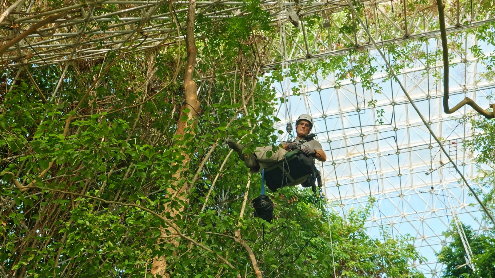
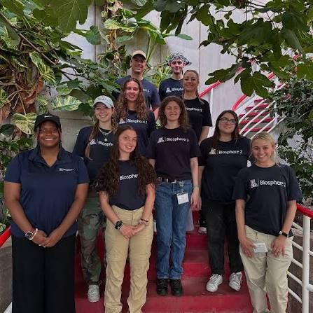

SIMOC
An agent-based model where students design and simulate closed-system habitats — Biosphere 2 on Earth, or a brand-new colony on Mars and the Moon. Built by the University of Arizona and the National Science Foundation.
A 3.14-acre living laboratory where kindergarteners, undergrads, and graduate scholars study Earth's systems side by side with the researchers rewriting the textbook.

The striking 3-acre physical structure of Biosphere 2 is paired with a unique approach to education and outreach that is intimately linked with cutting-edge research. Visitors don't read about science — they watch it happen, talk to the scientists doing it, and step inside the experiments.
Families, student groups, the university community, and the public can all experience Biosphere 2's innovative approach to tackling some of our biggest scientific questions about water, energy, climate, and the future of life on Earth.

Five doorways into Biosphere 2 — from a kindergarten's first field trip to a doctoral candidate's summer of field-defining research.
A free app-guided tour built for classrooms, biome-by-biome story stops, and the SIMOC simulator that lets students model their own closed-system habitats on Mars or the Moon.
Eight pathways for undergraduate and graduate students — Vertically Integrated Projects, Honors internships, Engineering Capstone, Carson Scholars, and more.
A 10-week NSF-funded summer research residency. $6,000 stipend, on-site housing, travel, and the chance to present your work to 100,000 visitors.
Schools, clubs, and university classes — bring 15 or more learners for a discounted, guided experience tailored to your curriculum.
How Biosphere 2 trains science communicators, partners with the community, and turns research into public understanding.
An agent-based model where students design and simulate closed-system habitats — Biosphere 2 on Earth, or a brand-new colony on Mars and the Moon. Built by the University of Arizona and the National Science Foundation.
Hour-long virtual visits that connect Biosphere 2 researchers with K-12 classrooms anywhere on the first biosphere — planet Earth. Topics include coral resilience, rainforests under climate change, and what Biosphere 2 teaches us about the future of the planet.
Seeing 100,000 visitors a year walk through the same door I do my research through — that's what makes Biosphere 2 different from any other lab. The public isn't an audience here. They're part of the experiment.

Dr. Katerina Dontsova
REU Program Director · Biosphere 2
Three ways in — choose the one that fits and we'll meet you at the door.